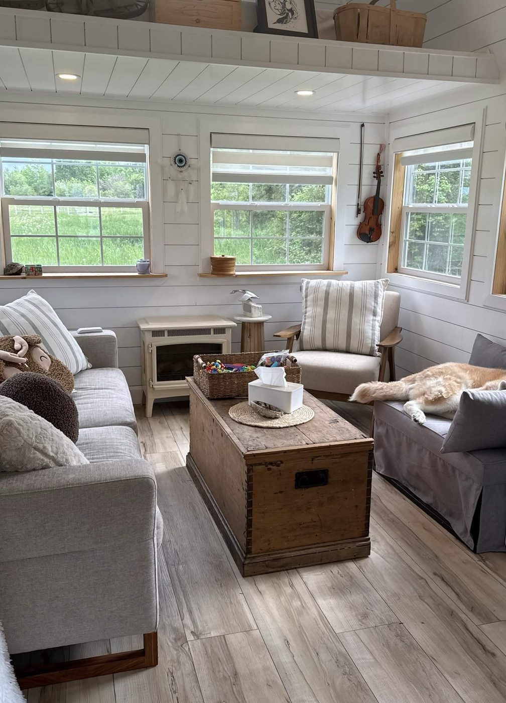
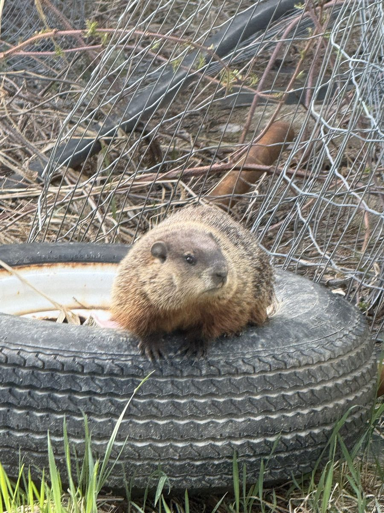

A private clinical practice rooted in Ontario, dedicated to trauma-informed healing, addiction recovery, and lasting wellness.
At CAST Clinical Services, we understand that reaching out for support can feel overwhelming. Whether you're navigating trauma, anxiety, grief, addiction, life transitions, neurodiversity, or simply feeling stuck, we're here to help you move forward with compassion, practical strategies, and care tailored to your unique situation.
We provide counselling, assessments, and referral services to individuals and families throughout Ontario through virtual, telephone, and in-person appointments.
We are listed with ConnexOntario and work within a network of care providers to ensure every client finds the right path forward, whether that means counselling, an assessment, a treatment referral, or executive coaching.
No two people are the same. Together, we'll build an approach that reflects your goals, strengths, values, and unique circumstances.
Healing happens at your pace. We provide a safe, non-judgmental space to explore difficult experiences, build coping skills, and support lasting wellness.
Sessions are available virtually, by telephone, in person, or through a hybrid approach, making support accessible wherever you are in Ontario.
I strive to provide respectful, culturally responsive counselling that honours each person's values, beliefs, identities, and lived experiences. I welcome conversations about incorporating cultural, spiritual, and community supports that are meaningful to you.
I know that reaching out for counselling isn't always easy. Life can feel overwhelming at times, and taking the first step toward support often takes courage. Whether you're navigating trauma, anxiety, grief, addiction, relationship challenges, neurodiversity, major life changes, or simply feeling stuck, my goal is to provide a safe, compassionate space where you can feel heard, respected, and supported.
I am the lead counsellor and owner of CAST Clinical Services. Originally from Iroquois Falls, Ontario, I provide counselling, assessments, and referral services to individuals and families throughout Ontario through in-person, virtual, and telephone appointments.
I earned my Master's degree from Wilfrid Laurier University, completing my studies within the Indigenous Field of Study. Throughout my education and professional journey, I have had the privilege of learning from Elders, teachers, knowledge keepers, researchers, and community members whose teachings have deepened my understanding of healing, relationships, and the importance of approaching each person's story with humility and respect.
I believe that meaningful counselling honours the values, beliefs, strengths, and lived experiences that each person brings to the therapeutic relationship. I welcome individuals from all backgrounds, cultures, identities, and life experiences, and I strive to create a safe, inclusive, and non-judgmental environment where people feel seen, heard, and accepted for who they are.
My approach is grounded in compassion, collaboration, and practicality. I don't believe there is a one-size-fits-all path to healing. Together, we'll identify your strengths, explore the challenges you're facing, and work toward meaningful goals at a pace that feels right for you. My hope is that you leave each session feeling a little less alone and a little more confident in your ability to move forward.
As a proud Northerner, I enjoy spending time outdoors, fishing, and sharing life with my faithful dog, Grace. I understand the importance of connection, community, resilience, and finding moments of peace even during life's most difficult seasons.
If you're considering reaching out, know that you don't have to have everything figured out before you begin. We'll start where you are and work together from there.
Our in-person office sits just minutes from town, close enough to reach with ease, yet tucked away enough to feel like you're getting away from it all. A private, calming place to heal, with the odd local visitor who likes to stop by.

Office photo
PhotoCoverage depends on your individual plan, and we will do our utmost to help you find the appropriate funded program whenever possible. You're also welcome to contact your insurance provider, NIHB, or the Métis Nation of Ontario directly.